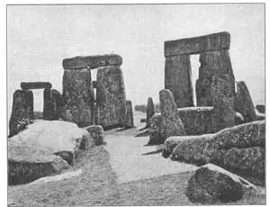
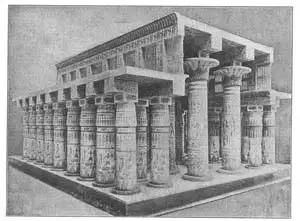

ALL of you at some time or other have built a house. It may have been a house of cards that blew over very easily, or it may have been made of books, or it may have been made of building blocks, or it may have been a shack in the back yard.
Now, every house must have walls and a roof. If you lean two blocks or cards together you have the walls forming a roof and the roof forming the walls. That is the simplest way—the sides form both walls and roof, as in a tent or a wigwam. The sides of the pyramids were both walls and roof. A pyramid was shaped something like a tent, but was built solid except for the small rooms in the center.
I told you the oldest buildings were tombs. The next oldest buildings were temples— houses men built for their gods. On the next page is a picture of the ruin of what we think was a temple. It probably never had a roof, but you can see several stone crossbeams still in place. It is called Stonehenge and it’s not in Egypt, it’s in England. I am showing it to you here because the stones still standing show very well how it was built—not as the pyramids were built, but by putting one stone across two standing stones. This is the second way of building.

No.61-1 STONEHENGE, ENGLAND （史前巨石柱，英国）
Photograph by Ewing Galloway
The ruins of Stonehenge look very much like something a child might build out of blocks—two blocks standing up with one laid across. But these blocks are of stone, immense stones many times bigger than a man. Stonehenge probably was built just to inclose a space that was set aside as holy ground, where the ancient men came to worship the Sun God, for this was long before Christ was born and before the Christian religion. We call the people who built Stonehenge, Druids.
One of the greatest and oldest of temples is in Egypt. It is the temple at Karnak, part of which was built by Rameses the Great, the Pharaoh who ordered all the Israelite children in Egypt killed. It also is a ruin and one of the most beautiful ruins in the world. You may feel that a ruin could not be beautiful. A broken down and dilapidated house or man is not usually beautiful. Why do you suppose this ruin of Karnak is called beautiful? I know a man who built a ruin in his garden! That’s absurd, of
The main columns at Karnak which once supported the roof were almost seventy feet high (twelve times as high as a man standing up) and twelve feet wide (twice as thick as a man’s height when he is lying down). These columns were made to look either like a single lotus flower or a bouquet of lotus flowers. Lotus flowers were water lilies that grew in the Nile.
There are other Egyptian temples, but though all of them are smaller, all were built in somewhat the same way. First there was an avenue of sphinxes leading to the temple, and then there were two obelisks. An obelisk is a tall, upright stone pointed at the top and it was supposed to represent a ray of the sun.

No.61-2 RESTORATION OF TEMPLE OF AMON, KARNAK （卡尔纳克的阿蒙神庙复原）
Courtesy of The University Prints
After the obelisks, came the gateway to the temple. This was made with two huge towers called pylons one at each side of the door. The pylon walls slant inward and if they went higher they would meet like a pyramid. It is thought that the old astrologers— that is, men who told fortunes from the stars—used to go up on top of these pylons to“read the stars.” The front of these pylons had figures cut into the rock face. See picture No.32-1 in Chapter32.
Back of the gateway was a walled courtyard, and back of that was a hall of columns called a hypostyle hall, and back of that the Holy of Holies where the statue of the god was kept.
You know how people, when they go abroad, bring home souvenirs. Well, nations have done the same thing. They have carried away many of the obelisks in Egypt and taken them to their own countries. Sometimes these souvenirs have been given, sometimes they have been bought, sometimes they have been stolen. We have one in Central Park, New York, and there is another in London on the bank of the river Thames. These two obelisks are called “Cleopatra’s Needles,” though they were made long before the Queen of Egypt named Cleopatra lived and they look more like giant pencils than needles. One is in Paris in the center of a beautiful square. There are many in Rome.
我们大家肯定都在某个时候盖过房子吧。有的用卡片叠房子，一吹就倒了。有的用书堆房子，或用积木搭房子，还有的可能曾在自家的后院里支过简陋的小木屋。
每一座房子必定都有屋顶和墙壁。如果你把两块积木或卡片斜靠在一起，就会使墙壁形成屋顶，屋顶构成墙壁。这可是最简易的方式——它的侧面既是屋顶也是墙壁，就像帐篷或棚屋一样。金字塔的侧面既是墙壁也是屋顶，具有帐篷的某种形状。但金字塔除了内部的几个小屋外，它的建构是坚固的。
我说过，世界上最古老的建筑是坟墓。而第二古老的建筑却是神庙——人们为他们的神所建造的房屋。下面的插图我们认为是一座神庙的遗址。也许它从来就没有屋顶，但几根石头横梁仍遗留在原地。它被称作史前巨石柱。它不在埃及，而在英国。看了图后你会发现，傲立的巨石依然表明神庙的建造方式——与金字塔有所不同。它却是把一块石头横放在两块竖立的石头之上。这是第二种建筑方式。
史前巨石柱建筑遗址看起来很像是小孩子用积木搭建的房屋——两块积木笔直地立着，上面横放着另一块。但这些不是积木，而是坚硬的岩石，大岩石有人的好几倍大呢！史前巨石柱或许是在一块圈出来做圣地的空地上建成的。古人来到此地祭拜太阳神。那可是早在基督和基督教诞生之前的事。我们把建造史前巨石柱的人称作德鲁伊特。
在埃及有一座规模最大，年代最久的神庙，那就是卡尔纳克神庙。这座神庙有一部分是由拉美西斯大王所建。这位法老曾下令杀死在埃及境内所有的以色列小孩。这座神庙现在已成废墟，同时也是世界上最美观的废墟之一。也许你并不认为一片废墟能有什么美观。通常，支离破碎的房屋同一个缺胳膊少腿的人一样，是不美的。你凭什么说卡尔纳克神庙美观呢？我认识一个人，他专门在自家后院搭建废墟。这当然太荒谬了。
卡尔纳克神庙曾经支撑屋顶的主圆柱差不多有七十英尺高（相当于普通人身高的十二倍），十二英尺宽（相当于普通人横躺时高度的两倍）。这些柱子的造型或像一朵莲花，或像一簇莲花。莲花就是生长在尼罗河里的睡莲。
埃及还有其他神庙。尽管这些神庙的规模较小，但它们的建法却大致相同。首先是通往神庙的斯芬克斯大道，然后是两座方尖碑。方尖碑是一块高耸笔直的大石头，顶端很尖，据说它代表一束日光。
走过方尖碑，便是神庙的入口。入口的两侧是由两座巨型的塔建成，这种塔被称作桥塔。桥塔的墙壁向塔内倾斜。越往高处，倾斜得越厉害，就像金字塔的造型。据说，古代的占星家——即根据星象的变化预测未来的人——常常爬上塔顶，“研读星象”。桥塔正面的岩石上还刻有许多人面像。参见第32章插图No.32-1。
跨进入口便是一个由高墙围住的庭院。往前是一个立柱大厅，叫做多柱厅。再往前就是神庙最神圣的地方，乃神像的供奉处。
一般人都知道，出国旅游的人都要带纪念品回国。同样道理，国家之间出访也会这样做。各个国家都从埃及把方尖碑运出来，搬进自己的国家。有些是人家当作纪念品赠送的，有些是花钱买的，也有是从埃及偷出来的。美国纽约的中央公园里有一座，英国伦敦的泰晤士河畔也有一座。这两座方尖碑被称作“克娄巴特拉针”。尽管它们早在埃及女王克娄巴特拉诞生之前就已经造成，但它们看起来更像是巨型铅笔而不像针。巴黎某个美丽的广场中心有一座，而罗马却有许多座。